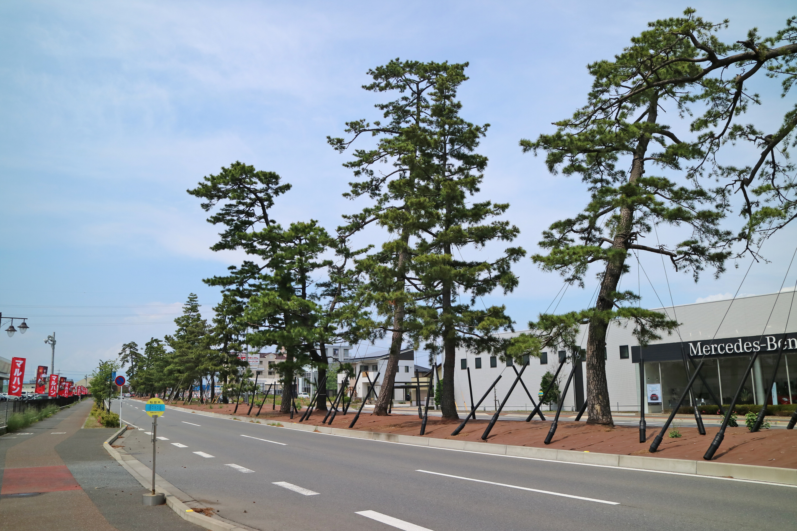

CSR
Corporate Social Responsibility
心が豊かになる環境を創造し続けます。
私たちは、事業活動を通じて環境・社会・地域に貢献する取り組みを⾏っています。
当社が保持する技術を活用・発展させ、「自然や生物多様性の保護・保全」
「持続可能な街づくり」「地域コミュニティの活性化」などの今日的な課題に対し、
具体的な解決策を提示しています。
事例 1：「おもはらの森」生態系モニタリング調査の取り組み
東急プラザ表参道原宿は、表参道と原宿の商業中心地に存在し、明治通りと表参道の交差点に位 置することから、景観的にも注目を集める都市型商業施設です。緑豊かなエリア環境に溶け込む よう、屋上には開放的なテラス「おもはらの森」が設置されています。

この建物の設計にあたっては、従来のような建物に植栽を合わせるのではなく、逆転の発想とし て、植栽が主体の建築設計がされています。クロスする両道路からも屋上に緑があると分かるよ うな外壁形状の工夫が施され、施設に森が乗っているような豊かな景観を演出し、周辺のケヤキ 並木とも調和したデザインです。周辺には、明治神宮の森をはじめとするまとまりのある緑地が 点在し、それらをつなぐ中継点としてエコロジカル・ネットワークの役割を目指しています。
こうしたコンセプトで創出された屋上庭園「おもはらの森」では、施設がオープンした 2012 年 から継続的に生態系のモニタリング調査を実施しています。調査は、専門家が⾏う「任意観察調 査」と、現地に設置したセンサー付きカメラが自動撮影する「定点撮影調査」の 2 つの調査方法 で実施しています。

本調査では、周辺の明治神宮の森や代々木公園などから飛来する鳥や昆虫などの生息・飛来状況 を調べ、生態系の推移を把握・データ化しています。調査結果を受けて、より生物多様性を高め るために、植栽の維持管理で「蝶のための吸蜜用植物の補植」「シジュウカラが巣材とするミズゴ ケの枝への設置」「巣箱の清掃や再配置」などを継続して⾏い、緑化改善を図っています。
ここれらの取り組みの結果、森や林で活動するシジュウカラの雛が巣箱で孵ったり、周辺の明治神 宮で確認されている冬鳥のジョウビタキが確認されたりするなど、屋上庭園が森として⿃に認識 されつつあります。都市部の屋上庭園でも、エコロジカル・ネットワークに寄与する緑を創出で きることが、本調査を実施することで分かりました。

本取り組みは、「世界屋上緑化会議 名古屋大会 2015」「一級造園施工技士の会」で発表したほか、
「屋上・壁面・特殊緑化コンクール」の屋上緑化部門で日経新聞社賞を受賞しました。
事例 2：江⼾時代から受け継がれる「松並木」の保全
群馬県前橋市天川大島町には、江⼾時代から受け継がれる松並⽊が存在しています。当時、参勤 交代に使われた「江⼾道」と呼ばれる街道沿いに位置し、現在も当時の地名から「松並木」と呼 ばれています。

この松並木のある群馬県道 2 号前橋館林線は、主要な幹線道路となっており、交通量が非常に多 く、常時渋滞となっていました。この渋滞を緩和するために、前橋市では 2 ⾞線道路を 4 ⾞線に 拡幅する計画を策定しました。中央分離帯にあるクロマツ 66 本のうち 50 本は、この計画範囲に あり、当初の計画では伐採する予定でした。ただ、保全を求める地域住⺠からの強い要望と、そ れに応えた前橋市が公約として保全に乗り出すなど、環境保護や文化的景観価値の保全という観 点からも注目を集める一大事業となりました。
バイパスを拡幅する際には中央分離帯内の松並⽊を移動し、整理する必要がありました。しかし、 作業幅員が狭く、道路占有の必要性やその影響による⼯期⻑期化の恐れがありました。また、旧 利根川の氾濫原であり、1 メートル下の層には玉石、上層には砂質土という土質により、掘り取 り時には根鉢が崩れ、活着率が著しく低下する懸念がありました。
-

- 
私たちは、 率を⾼める⼯夫として移植 による吸水阻害を大幅に減少させ 移植⼯法）を採⽤することで、短⼯期かつ中央分離帯内での作業を可能とし、⼤型バケットで根 鉢を底部より包み込む機械により が可能となりました。 移植前から移植後まで 1 年前の「根回し」を診断結果から提案
の⼀連の作業に関して「樹⽊医」に技術監理させ、樹⽊の活着 ました。当社 、根鉢崩壊を防ぎました。これらの工夫により の特許技術である「 ・実施し、移植時の根系切断 TPM 工法」 （専用機械による 、松並木の保全
開発時には 選択は、郷土の歴史や文化を守ること、生きものである樹木の命、そこに暮らす ものの棲みか、地域住⺠の⼼情、社会的貢献を果たした事業主 はるかに大きな成果 、経済的理由から安易に既存⽊を伐採処理する場合が多い
をもたらすことと なりました。 の評価など、目先の経済性よりも ですが、 「保全する さまざま 」という な生き